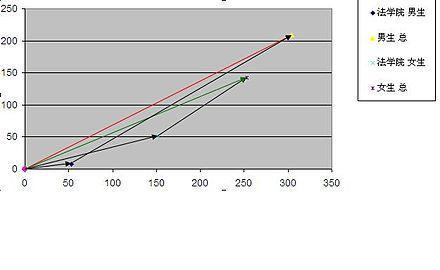

关键词：辛普森悖论 | 直觉 | 统计 | 可加性
辛普森悖论真是个很经典的东西，引用维基百科：
在分组比较中都占优势的一方，在总评中有时反而是失势的一方。
简书上有一篇文章提到一个结石治疗方案对比的例子，可视化得挺好，值得一看：辛普森悖论。举个极端一点的例子，更容易说清楚这个悖论到底是什么情况：
假设一个学校正在招生，其A学院对女生的录取率100% > 男生录取率90%；B学院女生录取率10% > 男生录取率0%。
现有男女生各100人。
女生报名A学院10人，报名B学院90人，所以A录取10个女生，B录取9个女生，共录取19个女生；
男生报名A学院90人，报名B学院10人，所以A录取81个男生，B录取0个男生，共录取81个男生。
整体来看，女生录取率19/100=19% < 男生录取率81/100=81%。
问题来了：无论A还是B学院，对女生的录取率都比男生高，直觉上整体的女生录取率也应该更高，但实际相反。
这是怎么回事？
先尝试给出一个说得通的解释：站在学生的角度看，报名不同学院像是赌球。报名A学院类似于赌输赢，风险小；报名B学院类似猜比分，风险大。虽然因为女生整体水平比男生厉害（更懂球）或者学校偏好女生（妹子猜谁赢我们尽可能就让谁赢），女生赌赢的机会更大（两个学院录取率都更高），但是女生大部分选择猜比分，男生大部分选择猜输赢，而猜比分和猜输赢的难度相差很大，大过男女差异，因此有优势更冒险的女生都死得差不多，较弱但更保守的男生活下来更多。
进一步思考，这种现象为什么违背直觉呢？
因为我们的直觉里有这样一个逻辑：如果一个东西的各部分都分别大于另一个东西的各部分，那么这个东西大于另一个东西。可以形式化如下：
假设：
A=A1+A2+...+An
B=B1+B2+...+Bn，那么：
如果对i=1,2...,n都有Ai>Bi，则A>B
这个逻辑在例子里显然hold不住了。根本原因在于假设里的“+”和“=”，其中隐含了可加性的前提。A1、A2、A3到底是什么，可不可加呢，加起来是不是等于A呢？如果A、B、Ai、Bi都是实数，那么可加性来自于定义，上面的逻辑自然没问题。然而对于学院录取的例子，我们有没有定义，或者能不能推导出录取率的可加性呢？不能。
在形式化之前，我们似乎很难看到可加性这个隐含前提。
要和数字玩游戏，最忌讳的便是想当然，直觉在某种程度上等同于碰运气，效果取决于问题的性质与直觉假设的吻合程度。不要讲数字会说谎，说谎是一种带有目的的主动行为，数字只会被算错，但不会说谎。
维基上还从几何角度解释了这个现象，将录取率表示为斜率，绿线和红线的斜率分别是整体的女生录取率和男生录取率，可以看到向量而非斜率的可加性：
女生单独两个向量斜率都比男生大，说明它们的比率都比较高。但最后男生总体向量斜率却大于女生

201906：辛普森悖论现象的背后有两组要素，以前例而言：一组要素是学校对男女学生的录取率，另一组则是男女学生报考的选择。 从认知的角度上理解，直觉让我们倾向于认为只有前一组要素对系统结果有质（最终录取率谁大谁小）的影响，而忽略了后一组要素。特别前一组要素与要考察的结果都是“对男女学生的录取率”，语义上似乎很接近，所以被我们“自然地”认为是决定性因素。